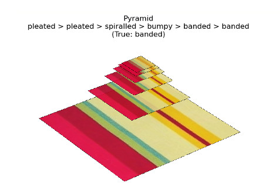
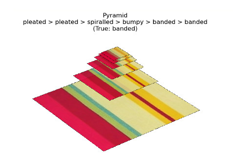

Hello.
This is a portfolio of some of my software projects. Interest areas include...
- Data Visualization
- Electromagnetics
- Image Processing
- 3D Graphics
- UI/UX
This is a portfolio of some of my software projects. Interest areas include...

This script converts an input image into an NTSC television signal, and animates the signal along with an IQ plot and stylized CRT raster scan. My goal was to illustrate how color information is encoded in analog TV.

An application for 3D mesh and curve modeling. Supports import of Blender .blend files. Written from scratch in vanilla JS, without webGL or any other libraries. Work in progress.
 

Part of a group project for a class. A ResNet model was trained on data from the Describable Textures Dataset, then used to classify the textures in images of household objects. Some experiments were also performed with classifying different levels of image resolution pyramids.
An interactive single-page app developed for a data science class visualization project. The page provides parallax scrolling, animations, interactive tooltips, and menus as the user explores the data from several perspectives.

This tool generates a circuit diagram using the Foster I method of network synthesis, historically used for designing analog electronic filters and equalizers. The algebra and circuit diagram will update in response to editing equation F(s), the impedence function in the Laplace domain.

A tool that creates hexagonal grids in 2D, or as 3D toroids using CSS 3D transforms.